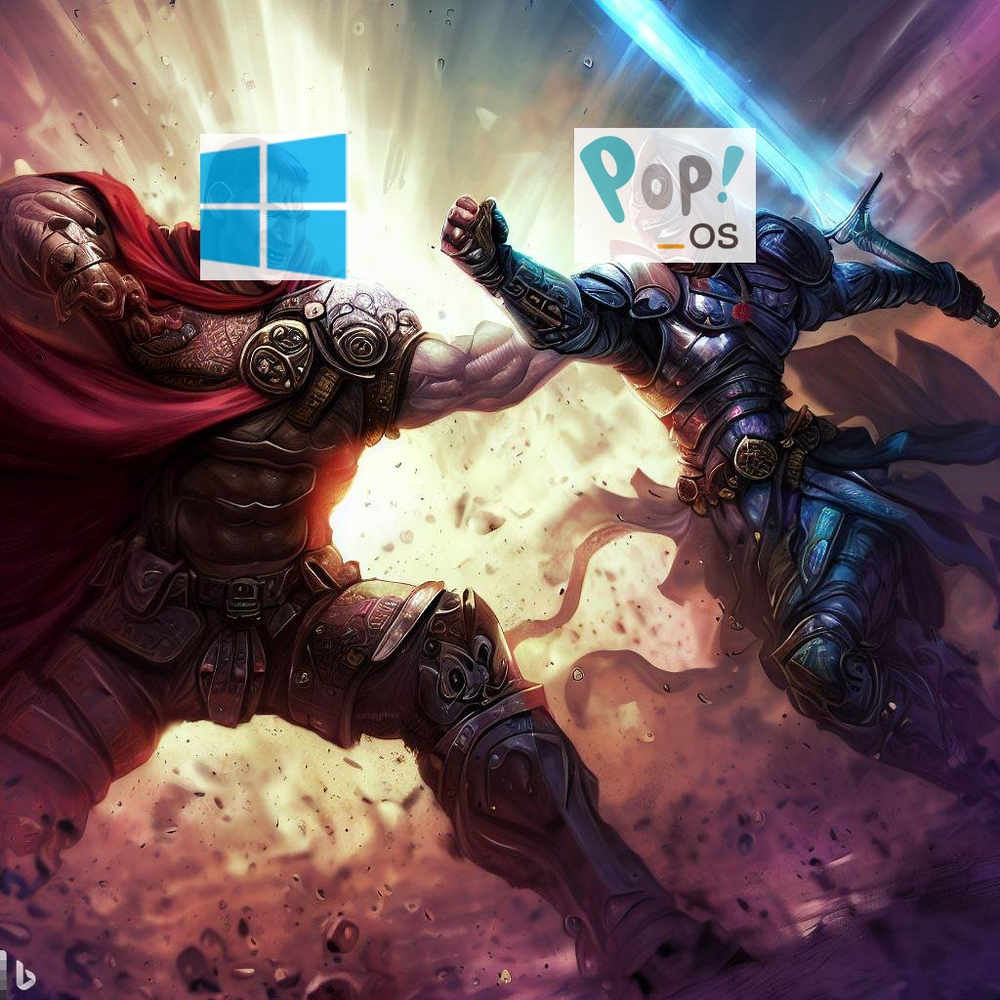

2023 05 06 the linux experience

Having used Microsoft products throughout my entire life, beginning from MS-DOS 6.1 and progressing all the way to Windows 11, I have occasionally dabbled with Linux. However, in the past, I have consistently returned to Windows.
Recently, I came across a challenge on Linus Tech Tips, where they pushed themselves to utilize Linux exclusively for an entire month to gain a deeper understanding of the system with its pros and cons. Inspired by their experiment, I decided to go on a similar journey. Unexpectedly, my Linux exploration lasted well beyond a year, and I am presently using Pop!_OS as my primary operating system.
Introduction¶
For the past six months, I have been using Pop!_OS as my primary operating system for work purposes. As a senior full stack developer, my work primarily revolves around creating software using the Microsoft stack, including SQL Server, C#, and Angular. Beyond my professional responsibilities, I am an avid PC gamer and was curious to explore the gaming potential of Linux. I spent slightly over a year exclusively gaming on Pop!_OS without any dual boot setup.
I believe that I have used the OS for a sufficient length of time to give a run down of my overall experience for this operating system. Having used Windows for such a long time prior to using Linux, I'll be comparing each Linux experience with the corresponding Windows experience.
Updates¶
In the world of Windows, every piece of software you install seems to have some sort of automatic update service running in the background. So when you boot up, all your browsers are updating, Adobe is updating, Steam is updating, Epic is updating, and in the background Windows itself is installing updates.
In this day and age with easily accessible broadband internet, this is much less of an issue. However, when you go on holiday and there isn't Wi-Fi available, and you are using your limited mobile data plan this is an issue. You can of cause tell your system that you are on a "metered connection" but not all the software that you have installed seems to obey this rule.
Finally, after updates have completed downloading then you have a few minutes to wait until the Windows takes its time installing these updates.
On the other hand on Linux, typically all your software is installed via package managers. For Pop!_OS there are two package managers: "APT" and "Flatpak". No updates happen unless you kick them off yourself. You can of cause opt in for automatic updates if you wish.
I like being more in control of when updates occur. Typically, Microsoft seems to know when I have a work presentation planned or stand-up meeting and is sure to interfere with an update at the same time.
File Locking¶
This "feature" in Windows really drives me up the wall. If you've been using Windows for any length of time, when you try to delete or move a file, you'll get that annoying "the action cannot be completed because the folder or a file in it is open in another program" dialogue. Then you go looking for the random application that's locking up a file in the folder you're trying to delete, only to find that it's Windows Defender that's scanning the files you're trying to delete.
Fortunately, Linux does not have this "feature". You can delete the files of an application while it's running, and it will continue to run in memory. If you're downloading a video file, you can watch the downloaded part of the video while it's still downloading without risking breaking the download.
Going back to the topic of updates, if you update Firefox on Linux while the Firefox browser is open, if you want the updated version, it's just a matter of closing and reopening Firefox, and you'll have the updated version.
Writing Software¶
Since, I'm a software developer, writing software features in my experience of Pop!_OS. I have written a number of .Net Core and .Net 6 and 7 applications. If you're writing a new application in the latest version of .Net, you'll have no problem writing the application on Linux.
Since I mostly write web applications, they usually run in a Docker container or a Linux VM. Writing the software in Linux ensures that it will run on it's intended target machine.
However, there are a few pitfalls to be aware of when writing code that needs to run on Linux, particularly when working with files:
- When referring to external files, most Linux file systems are case-sensitive, meaning that my-file.txt and My-File.txt refer to two separate files. On Windows, these two files are the same file. The solution is to always use case-sensitive filenames and paths in your code when reading external folders or files.
- Always use slashes (/) as path separators. Windows favours backslashes (), but it works fine with both.
Something that has really helped me to be a more productive developer on Pop!_OS is the JetBrains IDE tool suite. Since I already had experience with JetBrains Rider on Windows, the switch to Linux was virtually seamless.
However, there's one tool that I need for my day-to-day work, and the Linux alternatives are pretty lacking. I'm running a Windows 10 virtual machine in VirtualBox primarily to run this tool. That tool is SQL Server Management Studio. There are alternatives such as Azure Data Studio and the SQL Server extension for VS Code, but I have found that SQL Server Management Studio is usually more stable and has more scripting capabilities and has better UI capabilities.
If your application depends on either: Winforms, WPF, or you are using an old version of the .Net Framework. Then it would be safer to keep your development work on Windows.
Gaming¶
These days, Linux is surprisingly good at running computer games, even those not originally designed for Linux. However, Windows is still the king of PC gaming.
I have played a number of indie and AAA games on Pop!_OS including Skyrim, Stardew Valley, Borderlands 3, Mortal Kombat 11, Terraria, Two Point Hospital, The Sims 4, Devil May Cry 1-4, Slim Rancher, Fallout 3 and 4. Just to name a few. Sometimes the framerates were slightly worse than on Windows, but for other games the performance was slightly better. I haven't come across a single Steam game I wanted to play that wouldn't launch at all.
Unfortunately, many competitive online games do not play well on Linux due to their anti-cheat software. For example, you probably won't be able to play Rust, PUBG or Dead by Daylight any time soon. Also, if you want to use VR, Linux is still a bit behind.
So honestly, if you have a gaming rig and only play PC games. Just use Windows 10 (avoid Windows 11 until they stop breaking gaming performance with their updates). Personally, I switched back to Windows 10 a few weeks ago because I wanted to play Dauntless (doesn't work on Linux due to Easy Anti-Cheat).
If you are more of an emulation gamer and like to play your old Playstation 1, 2 and 3 games or the old Nintendo games on the PC, then Linux might be better for you. This is because Linux seems to have more emulator software available than Windows.
Conclusion¶
Both Windows and Pop!_OS are excellent operating systems for getting work done and for gaming. Pop!_OS seems to be much more stable, has a better update strategy and works well as a software development machine. Windows has some tools that are very useful that have no cross-platform alternatives and is still the king of pc gaming.
So which one should you choose? If you want a dedicated machine where all your PC games work, you play competitive online games, or you have a VR headset, then go for Windows. If you are a casual gamer, or enjoy a lot of emulation then Pop!_OS should work well for you. If you want a development machine with more configuration options, then Pop!_OS might be an option.